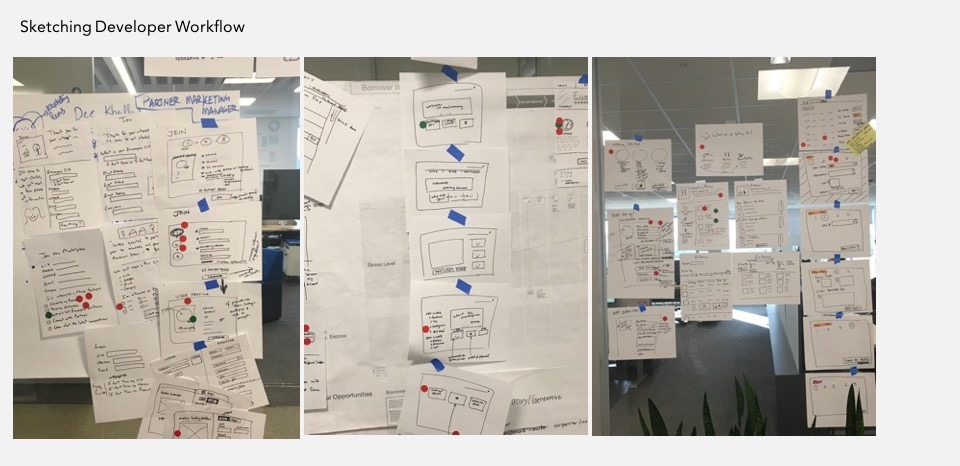
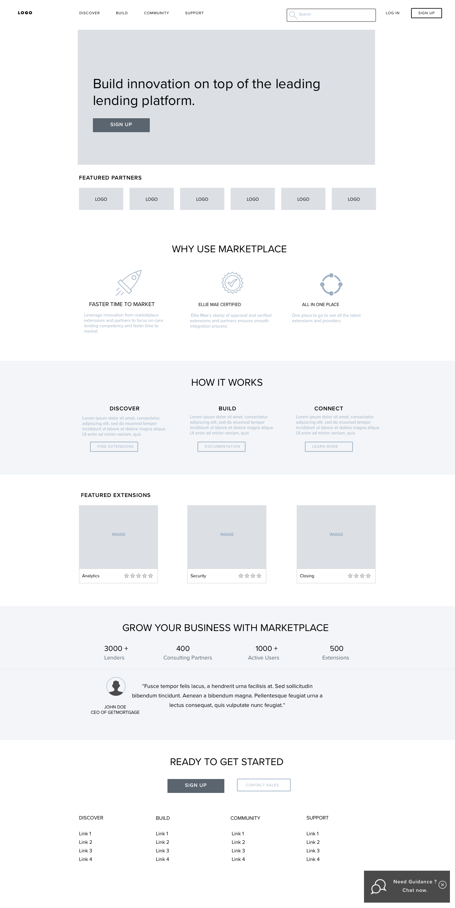

Design Sprint
Accelerating the design process to create the right customer experience.
Background
Ellie Mae wanted to create an ecosystem for lenders, consulting partners and service providers to buy and sell applications and services built on top of the Encompass lending platform. This effort spanned across internal organization including professional services, marketing, engineering and business development. There were several UX challenges that needed to be well thought out in order to provide a cohesive customer experience.
Approach
We decided to accelerate the design process by using the Design Sprint methodology bringing in product, marketing, business development, ux and engineering folks together in a 5-day hands-on collaborative workshop to create the vision for the Minimum Usable Product (MUP).
My Role
UX strategy, Facilitation, Competitive Analysis, Findings and Recommendations.
Preparation
To understand the problem space and design scope we did a UX competitive analysis of popular app marketplaces prior to the design sprint.
Using the industry-standard “10 Usability Heuristics” by Jakob Nielsen,
we evaluated the key flows of Getting Started, Enroll, Build & Distribute from the perspective of the first time developer experience.
Introductions, Understand the users, Create user personas, Competitive Review, Define problem space, scope and vision
Journey map, Site-map, Sketching, Ideation


Creating prototypes, Prepare test plan and script
- 
-

-

Refine prototypes, Start user testing
Review results, Discuss next steps